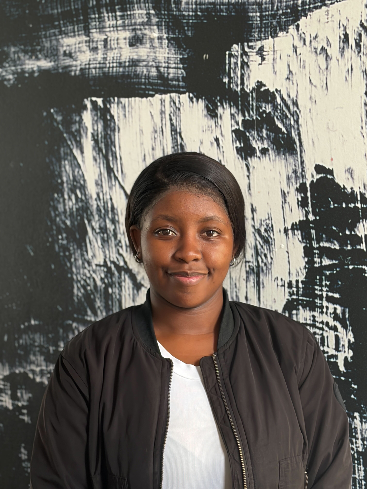

HTML AND CSS SHOWCASE PROJECT
Welcome to my personal portfolio! This website is a showcase of my skills and projects in HTML and CSS. Here, you can explore my journey as a developer, learn about my goals, and see reflections on my growth.
Welcome to my personal portfolio! This website is a showcase of my skills and projects in HTML and CSS. Here, you can explore my journey as a developer, learn about my goals, and see reflections on my growth.

My name is Owam Gobinca, and I am a passionate software developer with a love for creating engaging and user-friendly programmes. With a background in some programming languages such as delphi and python, I have honed my skills in HTML, CSS, and JavaScript to bring my creative ideas to life on the web.
In addition to my technical skills, I am a lifelong learner who is always eager to explore new technologies and stay up-to-date with industry trends. I believe that continuous learning is key to success in the ever-evolving field of web development.